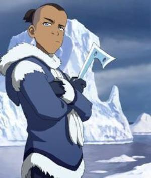
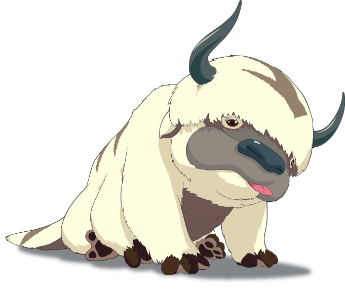
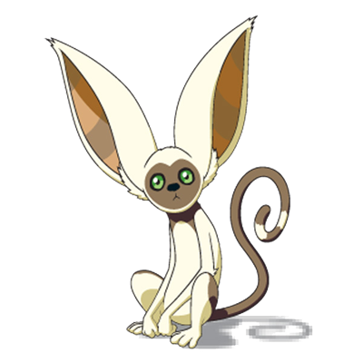

Sokka
Aang's best friend, Katara's sister, and a master swordsman.
More About SokkaMeet The Rest Of The Gang

Toph
Meet the blind bandit. Once the heir to a royal family, Toph can kick some serious butt. She can feel your movement with her feet, and even bend metal!

Appa
Appa is the Avatar's flying byson. He helps the crew get from place to place and always delivers perfectly timed grunts.

Momo
Momo is the Avatar's finding lemur. He was found in the Southern Air Temple and accompanies Aang throughout his adventures.